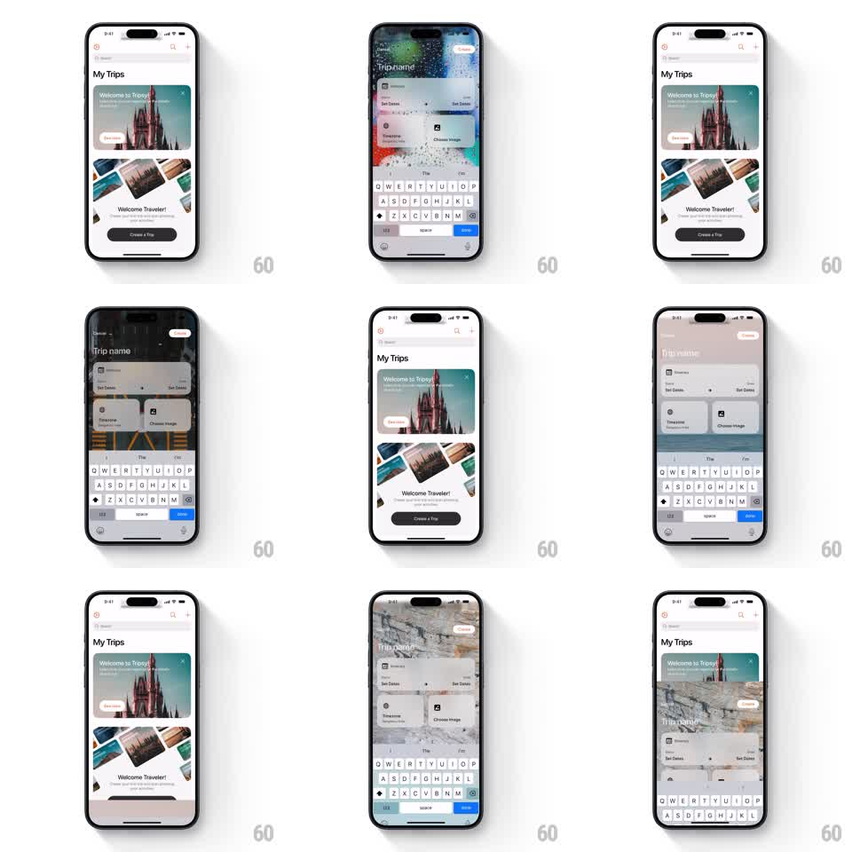

Media
Frame-by-frame

Rebuild this animation 1:1: Tripsy's new-trip modal - tapping Create a Trip slides up a full-screen "Trip name" sheet whose entire background is a randomized immersive photo (snow night, beach aerial, marble texture), different every time it opens.

Rebuild this animation 1:1: Tripsy's new-trip modal - tapping Create a Trip slides up a full-screen "Trip name" sheet whose entire background is a randomized immersive photo (snow night, beach aerial, marble texture), different every time it opens. ## Integration Integration: stack-agnostic spec - springs given as stiffness/damping, timed motions as duration + curve; map every value to your framework and animation library of choice. ## Scene My Trips screen (welcome card, Create a Trip button). The modal: full-bleed photo background, "Trip name" field with itinerary and Set Dates / Choose Image cards floating over a subtle blur, keyboard docked. Closing and reopening shows a different photo. ## Motion spec Pattern: randomized-backdrop modal entrance. - Sheet slides up full-height (spring ~300/28, ~350ms); the photo background crossfades in from a 1.05 scale (300ms), settling to 1.0 over the next 400ms (slow push-in). - Each open picks a different photo: the new image fades in over 350ms while the old one is never visible behind (load before present, fallback to neutral gradient). - Form cards (itinerary, Set Dates, Choose Image) rise 16px and fade in staggered 60ms apart (250ms each) after the sheet lands. - Keyboard rises with the sheet; the background dims slightly (black 20%) once typing starts so the field reads. - Swipe down / Done: sheet slides down (300ms), background scales back 1.0 -> 1.05 as it fades. ## Calibration - Form cards sit on translucent white (opacity ~0.92) with blur so any photo stays readable behind. - The photo is decorative - no parallax while typing. ## Reduced motion Sheet fades in; background swaps without the push-in. ## Don't miss - The randomization is per-open, not per-session - reopening immediately shows a new photo. - My Trips stays mounted underneath; the sheet is a cover, not a push.